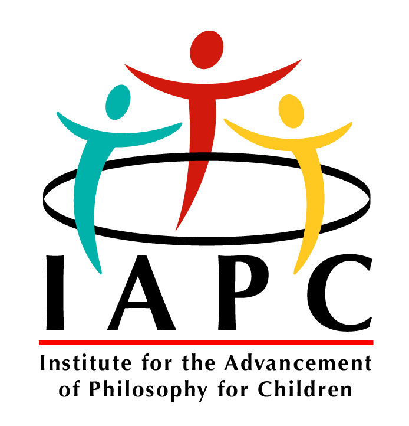

Case Study
Redesigning Philosophy for Children
Institute for the Advancement of Philosophy for Children

The Institute for the Advancement of Philosophy for Children (IAPC) at Montclair State University is the originating home of Philosophy for Children (P4C), a pedagogical approach developed by Matthew Lipman in the late 1960s. P4C uses purpose-written philosophical novels as the entry point for structured classroom inquiry: children's fiction in which characters encounter genuinely difficult questions, prompting a "community of inquiry" in which students reason together rather than receive answers.
Since 2021 I have worked with the IAPC as a designer on the professional redesign of its novel series. The work is ongoing: four books completed — Harry Stottlemeier's Discovery, Pixie, Elfie, and Lisa — and a fifth currently in progress. Each has been taken from manuscript to print-ready PDF and digital ePub, with original cover design, illustration, diagrams, and editorial preparation throughout.
The P4C novels were written in the 1970s and remained largely unchanged since: designed for mimeograph and early photocopier reproduction, copied and circulated in whatever format was available. Decades of international adoption produced ad-hoc translations and transcriptions of degraded copies that introduced real inaccuracies into the texts. The premise of this project was a canonical rebuild: clean the manuscripts, resolve the textual inconsistencies, and produce contemporary editions suitable for print and digital distribution with web accessibility standards met.
Every aspect of the reading artifact was in scope — typography, page layout, chapter structure, the handling of philosophical diagrams embedded in the narrative, cover design and cover art. Because the books needed to work both in fixed-format print and in reflowable ePub, some structural decisions that are standard in print (line numbers, for instance) had to be rethought entirely. Each book required separate InDesign files optimized for the two output formats. All completed books were assigned ISBNs, licensed under Creative Commons, and deposited in Montclair's institutional repository.
Each book has its own design identity matched to its readership and philosophical focus. Harry Stottlemeier's Discovery (fifth grade, formal logic) uses a purely typographic cover: the title set in spaced serif capitals arranged into a question mark. Pixie (third and fourth grade, language and meaning) has an illustrated cover — a hand-drawn P with a giraffe figure incorporated into its bowl — and required original diagram design for the passages where characters reason about how words relate to things. Elfie (first and second grade, thinking about thinking) has a loose, hand-drawn cover illustration: a rabbit contemplating a television set displaying its own title, capturing the metacognitive focus in a form a six-year-old can read. Lisa (sixth and seventh grade, ethics and social reasoning) is the most minimal: a handwritten cursive signature in white on flat teal, treating its protagonist as someone the reader should take seriously.


The diagrams inside the books are as carefully considered as the covers. The philosophical content in P4C is often inherently visual — characters sketch relationships, draw Euler circles, work through arguments on paper — and redesigning these moments meant producing standalone graphic elements that function both as reading aids and as objects students can annotate. The constraint throughout was the same one that governs P4C itself: a diagram that resolves the philosophical problem it is supposed to open up has done the opposite of its job.
The project also included a redesign of the IAPC's institutional logo, produced in multiple export formats for different use contexts.

Designing curriculum materials differs from trade publishing because the reader's relationship to the text is structured in advance: there is a teacher, a discussion, a set of questions that the reading is meant to generate. The design has to leave room for that. The most useful check throughout this work has been asking: does this help the reader get to the question, or does it answer it?